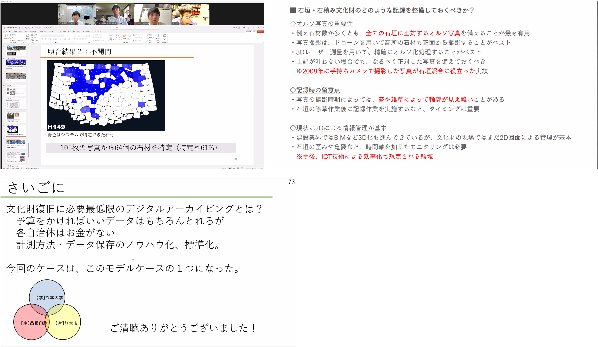
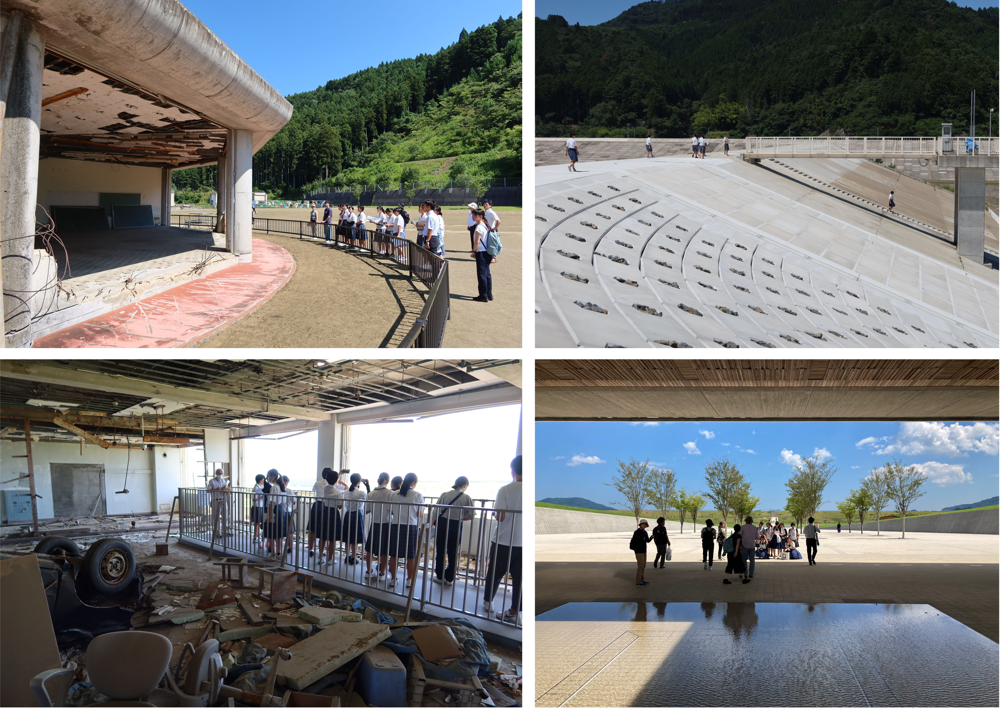
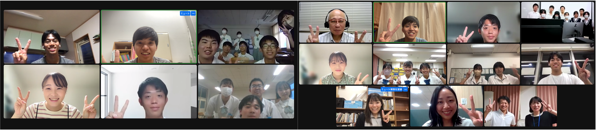
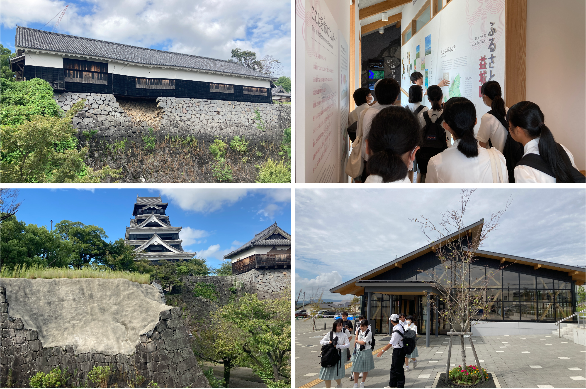
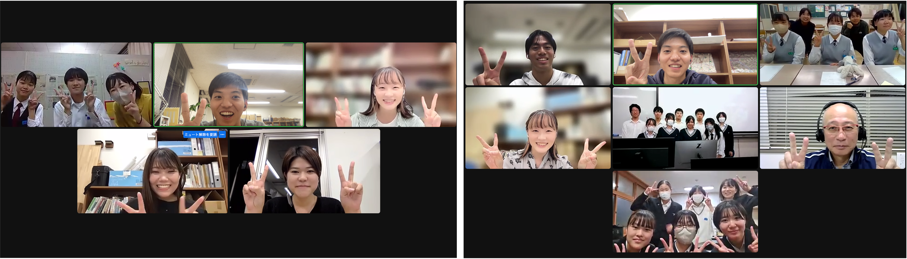
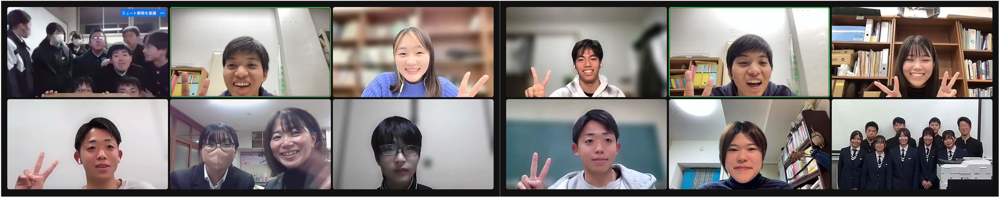

| 日 | 形式 | 内容 | 参加校 |
|---|---|---|---|
| 6/8(木) | 熊本城復旧ヒアリング | AIを用いて熊本城の石垣復旧に取り組む 熊本大学の上瀧剛先生へのヒアリング | 八幡浜高校 |
| 7/25(火)-28(金) | 東北復興視察 | 東日本大震災の被災地の復興を見学 | 宇和島東高校 南宇和高校 |
| 8/31(木) | 初回授業 | ガイダンスと敷地の議論 調査手法の紹介 高校での活動の報告 | 八幡浜高校 |
| 9/15(金) | 初回授業 | ガイダンスと敷地の議論 調査手法の紹介 高校での活動の報告 | 宇和島東高校、浜松工業高校、南宇和高校 |
| 9/21(木)-22(金) | 熊本復興視察 | 熊本地震の被災地の復興を見学 | 八幡浜高校 |
Computer Visionを使って熊本城の石垣修復に取り組む熊本大学の上瀧剛先生からお話を伺い、八幡浜の石垣や文化財の事前復興のためできることを議論しました。 八幡浜高校では、八幡浜市の段々畑の石垣といった文化財を被災後に早急に復旧し、「心の復興」を達成するために、デジタル技術の活用を考えています。 上瀧先生は、熊本地震後に崩落した熊本城の石垣の元々の所在地をAI技術を使って特定する技術を開発し、人手で数ヶ月かかった石材の照合作業を2時間に短縮しました。 熊本城では、被災前に民間企業がデジタルアーカイブ作成用に撮影した石垣の写真がたまたま存在し、被災前の写真と崩落石材を照合することができました。 高校生との議論では、文化財をさまざまな角度・場所から撮影したデータを残しておくことにより、被災後の復旧作業が円滑に進む、とアドバイスをいただきました。

宇和島東高校と南宇和高校とともに東日本大震災の被災地を巡り、防災と復興に関してうまくいったことと課題を学び、事前復興への教訓を議論しました。 仙台市荒浜、女川町、石巻市雄勝町、旧大川小学校、石巻市北上町、気仙沼市、陸前高田市、南三陸町志津川地区への訪問では、各地域で異なる復興の形と防災の教訓を学びました。 東北で学んだことを地域に持ち帰り、周りの人に伝え続けます。 視察の詳細はこちら

8月31日参加校: 八幡浜高校
9月15日参加校: 宇和島東高校、浜松工業高校、南宇和高校
八幡浜高校では、文化財保護・デジタル活用班、南海トラフ地震防災班に分かれてそれぞれの視点で事前復興を考えています。 文化財保護・デジタル活用班は、八幡浜のまちや文化財のデジタルアーカイブを作ろうとしています。 今後は、身近な人に話を聞いて、何をアーカイブしておくかから、具体的な方法まで考えていきます。 南海トラフ地震防災班では、地震発生後の避難時の、火災発生や道路閉塞など想定外のリスクを考えることで、避難経路を再検討しています。 阪神淡路大震災や東日本大震災から学ぶことの重要性や、地域の方への伝え方について工夫を深めていきます。
宇和島東高校は、東日本大震災の被災地視察での学びを踏まえて、コンクリートに関する研究活動を防災につなげることを目指しています。 コンクリート素材に関する議論と防災計画の議論とが協調するためにどういった視点が大事かについて議論しました。 また、保育園から高校までの6校で避難訓練を行う予定で、その際に注意すべきことについても議論しました。
浜松工業高校は、「浜松市の事前復興計画を私たちが提案する」ことを目標として活動しています。 地域の全体像の分析、災害の分析、市民アンケートの分析から、災害前後のコミュニティ形成と維持が重要であると考えています。 復興とコミュニティについて過去の問題や建築・都市計画的提案をまとめて、被災後の人口流出防止と共助に資する計画を住民や市に提案したいと考えています。
南宇和高校は、東日本大震災の被災地視察で学んだことを防災班として住民の方に発表します。 また、地域のコミュニティスペースで愛南町の防災や事前復興について共有する場をつくることを考えています。 要点だけをうまく伝えるにはどうすればよいか、普段から常に防災や事前復興について考えているわけではない住民の方にうまく伝えるにはどうすればいいか、などについて議論をしました。


10月27日参加校: 八幡浜高校
10月31日参加校: 宇和島東高校、浜松工業高校、南宇和高校
八幡浜高校文化財保護・デジタル活用班は、熊本研修を踏まえて、八幡浜の事前復興に活用できる視点を議論しました。 文化財の視点からは、熊本市民にとっての熊本城にあたる心のよりどころについて、八幡浜市民に発信し話し合うことが重要であると考えています。 デジタルの視点からは、経験したことのないことを経験できるデジタルの強みや、LINE Worksを用いた机上訓練について議論しました。 南海トラフ地震防災班では、現地調査に基づく避難経路の危険度を、住民や行政の方にどのように伝えるのがいいか、それによりどう地域の防災に貢献できるかを考えます。
宇和島東高校は、東北研修の学びを、事前復興イベントや研究発表で多くの人に伝えています。 また、復興期に不足するコンクリートの地産地消を目指して、牡蠣殻コンクリートの研究を進めています。 建設用川砂の不足、炭素固定など社会課題に資する有用な技術を開発することを目指しています。 1年生の活動も始まり、これからが楽しみです。
浜松工業高校は、事前復興とSDGsの観点で、持続可能な地域づくりを考えています。 災害の履歴や土地の特徴を丁寧に調べ、災害という敵の特性と自分の地域の弱点を読み解きました。 浜松市中区を防災拠点として位置付け、衰退する商店街の再興と防災を、布の循環プログラムやリノベ建築によって実現することを目指しています。
南宇和高校は、地元愛南町での防潮堤建設現場を見学しました。 東北視察と愛南町の防潮堤で、規模や思想の違いがあることを学びました。 自分たちが東北と愛南町で感じたことを自分たちの言葉で伝えること、東北の防潮堤の好事例を愛南町に活用するアイデア、高校生や地元の人でもっと防潮堤の高さやデザインについて話し合うことの必要性、などについて議論しました。 高校生の声を積極的に発信し、愛南町で動き出そうとしている事前復興計画に貢献することを目標にしています。

11月24日参加校: 宇和島東高校、大阪教育大学附属高校天王寺校舎、八幡浜高校
12月5日参加校: 浜松工業高校

12月10日に横浜市立大学で開催された復興デザイン会議において、「次世代が描く地域復興：中高生による復興・事前復興の取り組み」の題で、活動発表を行いました。 宇和島東高校、大阪教育大学附属高校天王寺校舎、なみえ創成中学校、浜松工業高校、八幡浜高校2チーム（文化財保護・ハザードマップ）から事前復興プランの提案を行い、専門家の方からコメントをいただきました。 最終発表の詳細はこちら